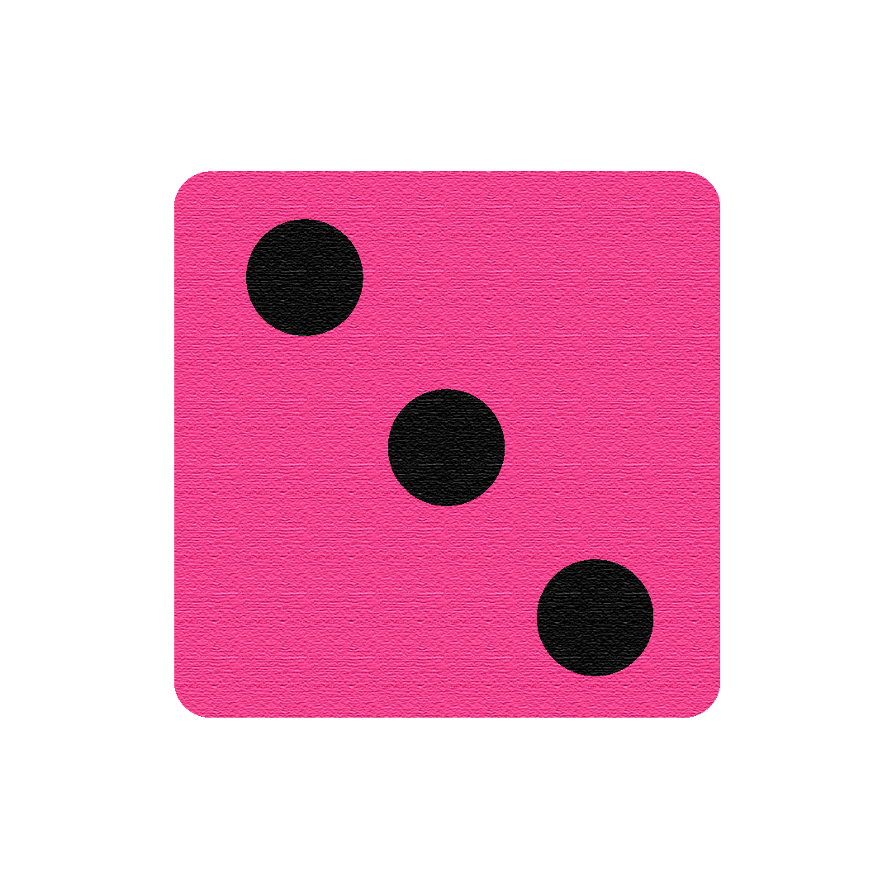

CAPES · InovaEDUCAÇÃO · UNEB
O jogo como
Ferramenta
Pedagógica
Estratégia, interação e desafios que se conectam aos objetivos da aprendizagem. Sistema colaborativo que reúne materiais e propostas para aplicar jogos em contextos de ensino.
Desenvolvida em parceria com a Universidade do Estado da Bahia (UNEB) e financiada pelo Programa InovaEDUCAÇÃO da CAPES. Coordenação: Profa. Dra. Vânia Gonçalves de Brito dos Santos.
⚠️ Plataforma em construção — aguardando lançamento pela UNEB
Stack técnica